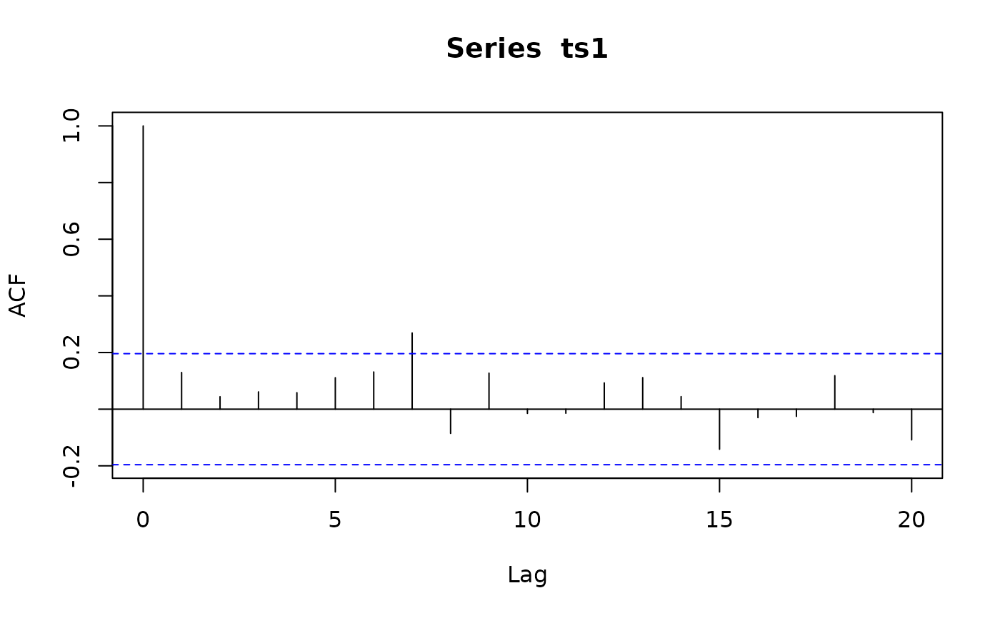

Carry out IID tests using sample autocorrelations
acfIidTest.RdCarry out tests for IID from sample autocorrelations.
Usage
acfIidTest(acf, n, npar = 0, nlags = npar + 1,
method = c("LiMcLeod", "LjungBox", "BoxPierce"),
interval = 0.95, expandCI = TRUE, ...)Arguments
- acf
autocorrelations.
- n
length of the corresponding time series.
- npar
number of df to subtract.
- nlags
number of autocorrelations to use for the portmonteau statistic, can be a vector to request several such statistics.
- method
a character string, one of "LiMcLeod", "LjungBox" or "BoxPierce".
- interval
a number or NULL.
- expandCI
logical flag, if
TRUEreturn a CI for each lag up tomax(nlags). Used only if CI's are requested.- ...
additional arguments passed on to methods. In particular, some methods have argument
xfor the time series.
Details
Performs one of several tests for IID based on sample
autocorrelations. A correction of the degrees of freedom
for residuals from fitted models can be specified with argument
npar. nlags specifies the number of autocorrelations to
use in the test, it can be a vector to request several tests.
The results of the test are gathered in a matrix with one row for each
element of nlags. The test statistic is in column "ChiSq",
degrees of freedom in "DF" and the p-value in "pvalue". The method is
in attribute "method".
If interval is not NULL confidence intervals for the
autocorrelations are computed, under the null hypothesis of
independence. The coverage probability (or probabilities) is
speciified by interval.
If argument expandCI is TRUE, there is one row
for each lag, up to max(nlags). It is best to use this feature
with a single coverage probability.
If expandCI to FALSE the confidence intervals are put in
a matrix with one row for each coverage probability.
Methods
signature(acf = "ANY")-
In this method
acfcontains the autocorrelations. signature(acf = "missing")-
The autocorrelations are computed from argument
x(the time series). signature(acf = "SampleAutocorrelations")-
This is a convenience method in which argument
nis taken fromacfand thus does not need to be specified by the user.
See also
whiteNoiseTest,
acfGarchTest,
acfMaTest;
plot-methods for graphical representations of results
Examples
set.seed(1234)
ts1 <- rnorm(100)
a1 <- drop(acf(ts1)$acf)

acfIidTest(a1, n = 100, nlags = c(5, 10, 20))
#> $test
#> ChiSq DF pvalue
#> [1,] 102.7351 5 1.400761e-20
#> [2,] 115.6877 10 3.785190e-20
#> [3,] 123.1473 20 7.429551e-17
#> attr(,"method")
#> [1] "LiMcLeod"
#>
#> $ci
#> int
#> [1,] -0.1959964 0.1959964
#> [2,] -0.1959964 0.1959964
#> [3,] -0.1959964 0.1959964
#> [4,] -0.1959964 0.1959964
#> [5,] -0.1959964 0.1959964
#> [6,] -0.1959964 0.1959964
#> [7,] -0.1959964 0.1959964
#> [8,] -0.1959964 0.1959964
#> [9,] -0.1959964 0.1959964
#> [10,] -0.1959964 0.1959964
#> [11,] -0.1959964 0.1959964
#> [12,] -0.1959964 0.1959964
#> [13,] -0.1959964 0.1959964
#> [14,] -0.1959964 0.1959964
#> [15,] -0.1959964 0.1959964
#> [16,] -0.1959964 0.1959964
#> [17,] -0.1959964 0.1959964
#> [18,] -0.1959964 0.1959964
#> [19,] -0.1959964 0.1959964
#> [20,] -0.1959964 0.1959964
#> attr(,"level")
#> [1] 0.95
#>
acfIidTest(a1, n = 100, nlags = c(5, 10, 20), method = "LjungBox")
#> $test
#> ChiSq DF pvalue
#> [1,] 105.7423 5 3.249445e-21
#> [2,] 119.6584 10 5.935593e-21
#> [3,] 126.8248 20 1.532370e-17
#> attr(,"method")
#> [1] "LjungBox"
#>
#> $ci
#> int
#> [1,] -0.1959964 0.1959964
#> [2,] -0.1959964 0.1959964
#> [3,] -0.1959964 0.1959964
#> [4,] -0.1959964 0.1959964
#> [5,] -0.1959964 0.1959964
#> [6,] -0.1959964 0.1959964
#> [7,] -0.1959964 0.1959964
#> [8,] -0.1959964 0.1959964
#> [9,] -0.1959964 0.1959964
#> [10,] -0.1959964 0.1959964
#> [11,] -0.1959964 0.1959964
#> [12,] -0.1959964 0.1959964
#> [13,] -0.1959964 0.1959964
#> [14,] -0.1959964 0.1959964
#> [15,] -0.1959964 0.1959964
#> [16,] -0.1959964 0.1959964
#> [17,] -0.1959964 0.1959964
#> [18,] -0.1959964 0.1959964
#> [19,] -0.1959964 0.1959964
#> [20,] -0.1959964 0.1959964
#> attr(,"level")
#> [1] 0.95
#>
acfIidTest(a1, n = 100, nlags = c(5, 10, 20), interval = NULL)
#> $test
#> ChiSq DF pvalue
#> [1,] 102.7351 5 1.400761e-20
#> [2,] 115.6877 10 3.785190e-20
#> [3,] 123.1473 20 7.429551e-17
#> attr(,"method")
#> [1] "LiMcLeod"
#>
acfIidTest(a1, n = 100, method = "LjungBox", interval = c(0.95, 0.90), expandCI = FALSE)
#> $test
#> ChiSq DF pvalue
#> [1,] 103.0303 1 3.300609e-24
#> attr(,"method")
#> [1] "LjungBox"
#>
#> $ci
#> int
#> [1,] -0.1959964 0.1959964
#> [2,] -0.1644854 0.1644854
#> attr(,"level")
#> [1] 0.95 0.90
#>
## acfIidTest() is called behind the scenes by methods for autocorrelation objects
ts1_acrf <- autocorrelations(ts1)
class(ts1_acrf) # "SampleAutocorrelations"
#> [1] "SampleAutocorrelations"
#> attr(,"package")
#> [1] "sarima"
whiteNoiseTest(ts1_acrf, h0 = "iid", nlags = c(5,10,20), method = "LiMcLeod")
#> $test
#> ChiSq DF pvalue
#> [1,] 3.969382 5 0.5538326
#> [2,] 15.709796 10 0.1082467
#> [3,] 24.323983 20 0.2285263
#> attr(,"method")
#> [1] "LiMcLeod"
#>
#> $ci
#> int
#> [1,] -0.1959964 0.1959964
#> [2,] -0.1959964 0.1959964
#> [3,] -0.1959964 0.1959964
#> [4,] -0.1959964 0.1959964
#> [5,] -0.1959964 0.1959964
#> [6,] -0.1959964 0.1959964
#> [7,] -0.1959964 0.1959964
#> [8,] -0.1959964 0.1959964
#> [9,] -0.1959964 0.1959964
#> [10,] -0.1959964 0.1959964
#> [11,] -0.1959964 0.1959964
#> [12,] -0.1959964 0.1959964
#> [13,] -0.1959964 0.1959964
#> [14,] -0.1959964 0.1959964
#> [15,] -0.1959964 0.1959964
#> [16,] -0.1959964 0.1959964
#> [17,] -0.1959964 0.1959964
#> [18,] -0.1959964 0.1959964
#> [19,] -0.1959964 0.1959964
#> [20,] -0.1959964 0.1959964
#> attr(,"level")
#> [1] 0.95
#>
plot(ts1_acrf)
## use 10% level of significance in the plot:
plot(ts1_acrf, interval = 0.9)